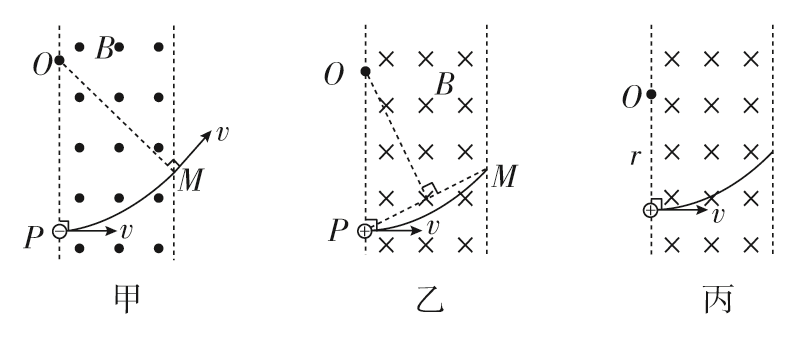
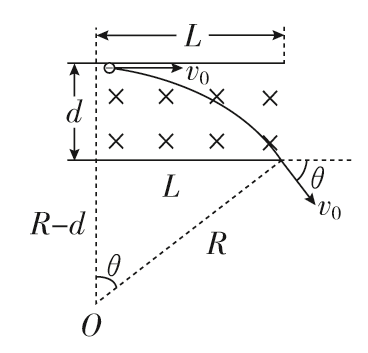
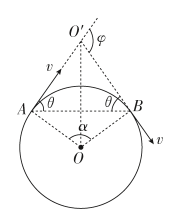
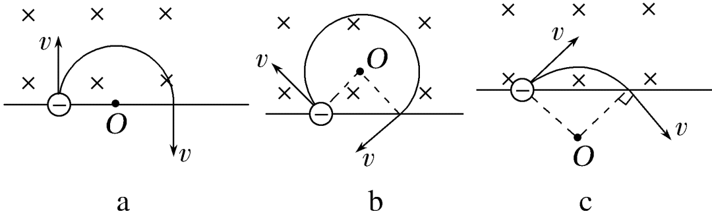
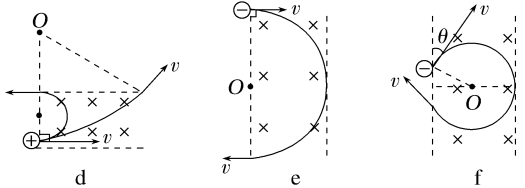
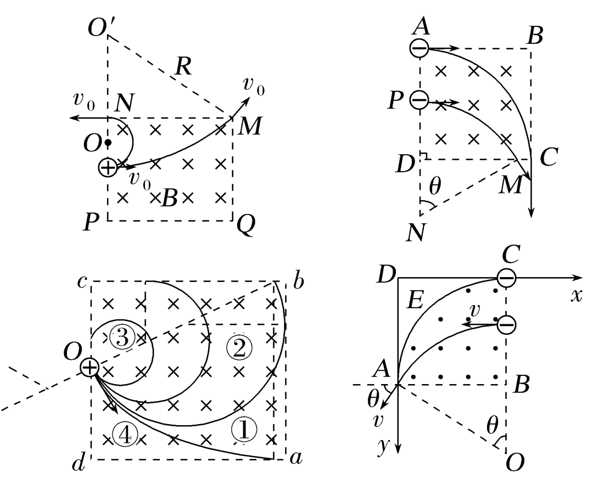
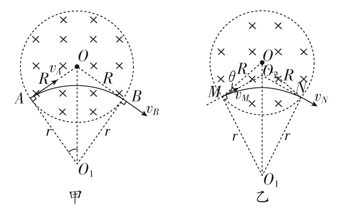
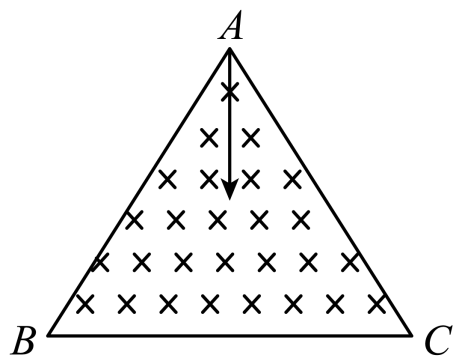

★模型定义
带电粒子（不计重力）以速度 $v$ 进入磁感应强度为 $B$ 的匀强磁场，所受洛伦兹力为 $f=qvB\sin\theta$（$\theta$ 为 $v$ 与 $B$ 的夹角）。根据初速度方向与磁场方向的关系，运动形式分为两种：
| 情形 | 条件 | 运动性质 | 原因 |
|---|---|---|---|
| 直线运动 | $v \parallel B$（$\theta=0\^\circ$ 或 $180\^\circ$） | 以入射速度 $v$ 做匀速直线运动 | 洛伦兹力 $f=0$，粒子不受力 |
| 圆周运动 | $v \perp B$（$\theta=90\^\circ$） | 在垂直于磁场的平面内做匀速圆周运动 | 洛伦兹力 $f=qvB$ 提供向心力，始终与速度垂直 |
1基本公式：洛伦兹力提供向心力
带电粒子垂直进入匀强磁场时，洛伦兹力提供圆周运动所需的向心力：
- 左边 $qvB$：洛伦兹力大小；
- 右边 $m\dfrac{v^2}{r}$：匀速圆周运动所需向心力；
- 等式成立是粒子做匀速圆周运动的动力学条件。
2导出公式
① 轨道半径
由 $qvB = m\dfrac{v^2}{r}$ 整理可得：
即轨道半径与粒子动量 $mv$ 成正比，与 $qB$ 成反比。
② 周期与频率
粒子绕行一周的时间：
频率 $f$ 与角速度 $\omega$ 分别为：
- 周期 $T$、频率 $f$、角速度 $\omega$ 的大小与轨道半径 $r$ 和运行速率 $v$ 无关；
- 它们只由磁场的磁感应强度 $B$ 和粒子的比荷 $\dfrac{q}{m}$ 决定。
3要点点拨
1．圆心的确定
常用两种方法确定圆周运动圆心：
| 方法 | 操作 |
|---|---|
| 方法 1 | 作粒子进入磁场方向的垂线和离开磁场方向的垂线，两条垂线的交点即为圆心。 |
| 方法 2 | 作进入（或离开）磁场方向的垂线，再作轨迹中两点连线的中垂线，两条线的交点即为圆心。 |

2．半径的确定和计算
| 途径 | 方法 |
|---|---|
| 几何途径 | 利用平面几何关系，一般是利用三角函数解直角三角形。 |
| 物理途径 | 直接由半径公式 $r=\dfrac{mv}{qB}$ 求解。 |
3．运动时间的确定
设 $\alpha$ 为粒子在匀强磁场中转过的圆心角（弧度制），则运动时间可通过以下两种途径求得：
也可由弧长 $s=r\alpha$ 得到：
4解题方法
洛伦兹力不做功
洛伦兹力的方向总跟带电粒子运动的速度方向垂直，所以洛伦兹力对运动电荷不做功。它不会改变带电粒子速度的大小，只改变粒子运动的方向。
当带电粒子垂直进入匀强磁场，只受洛伦兹力作用时，它将做匀速圆周运动。
解题注意事项
- 带电粒子在匀强磁场中做匀速圆周运动的半径跟它的质量和速度的乘积成正比，跟它所带电荷量和磁场的磁感应强度的乘积成反比。
- 带电粒子在匀强磁场中做匀速圆周运动的周期与它的运动半径、速度无关。
- 比荷相等的带电粒子在同一匀强磁场中做匀速圆周运动的周期相等。
5典型例题
6互动计算：半径、周期与运动时间
7带电粒子在有界匀强磁场中的运动
带电粒子在有界匀强磁场中运动时，可按以下流程进行分析。
1．确定轨迹圆心
首先应画出轨迹圆示意图，找出轨迹圆心。确定轨迹圆心的 3 个依据：
- 圆心一定在垂直于速度的直线上；
- 圆心一定在弦的中垂线上；
- 圆心与轨迹圆上任一点的距离一定等于轨迹半径。

2．轨迹半径的计算
方法一（由动力学关系求）：由于 $qvB = m\dfrac{v^2}{r}$，所以轨迹半径
方法二（由几何关系求）：作辅助线构造出与轨迹半径相关的三角形（通常是直角三角形），根据勾股定理、三角函数求解，或根据正弦定理、余弦定理求解。
例如：如图所示，由 $R^2 = L^2 + (R-d)^2$ 可解得 $R$。

3．运动时间的计算
方法一（由圆心角 $\alpha$、周期 $T$ 求）：
方法二（由弧长 $s$、线速度 $v$ 求）：
4．作图及分析注意事项
| 要素 | 内容 |
|---|---|
| 四个点 | 入射点、出射点、轨迹圆心、入射速度所在直线与出射速度所在直线的交点。 |
| 六条线 | 圆弧两端点所在的轨迹半径，入射速度所在直线和出射速度所在直线，入射点与出射点的连线，圆心与两条速度所在直线交点的连线。 |
| 三个角 | 速度偏转角 $\varphi$、圆心角 $\alpha$、弦切角 $\theta$。粒子速度的偏转角等于轨迹所对圆心角，并等于弦切角的 2 倍，即 $\varphi = \alpha = 2\theta = \omega t$。 |

一、单直线边界匀强磁场
【要点点拨】等角进出：粒子进、出磁场时，速度与边界的夹角相等，即入射点的弦切角等于出射点的弦切角，如图所示。

二、平行边界匀强磁场
【要点点拨】运动轨迹存在临界条件，如图 f，轨迹与右边界相切时，该粒子恰好不从右边界射出（找出切点和交点是解题关键）。

三、矩形边界匀强磁场
【要点点拨】常常涉及临界问题，运动轨迹刚好和边界相切是关键。

四、圆形边界匀强磁场
【要点点拨】
- 径向进出：若粒子沿着边界圆的某一半径方向进入磁场，则粒子离开磁场时速度的反向延长线一定过磁场区域的圆心（即沿着另一半径方向射出），如图甲所示。

图：圆形边界磁场的径向进出（甲）与等角进出（乙） - 等角进出：若粒子射入磁场时速度方向与入射点对应半径夹角为 $\theta$，则粒子射出磁场时速度方向与出射点对应半径夹角也为 $\theta$，如图乙所示。
- 判断运动时间的技巧：
- 速度大小相等时，轨迹（弧长）越长，运动时间越长；速度大小不相等时，要用 $t=\dfrac{s}{v}$ 分析，不可只看轨迹长短。
- 运动周期相等时，圆心角（偏转角）越大，运动时间越长；周期不相等时，要用 $t=\dfrac{\alpha}{2\pi}T$ 分析。
- 同一粒子进入同一磁场的速度大小变化后，可根据圆心角大小快速判断运动时间长短。
五、三角形边界匀强磁场
【要点点拨】遇到三角形边界时，注意区分运动轨迹与边界相切还是从角射出。
